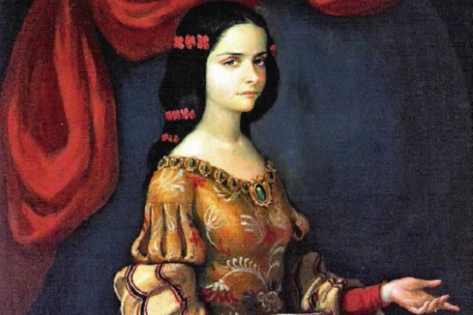

Juana Inés de la Cruz
The Phoenix of Mexico

Portrait of Juana Inés de Asbaje y Ramírez de Santillana
Timeline
- 1648 Juana Inés de Asbaje y Ramírez de Santillana was born on November 12th, 1648 in San Miguel Nepantla, near Mexico City.
- 1656 Composed her first poem at the tender age of 8
- 1661 Taught Latin to young children. She longed to disguise herself as a male so that she could go to University but was not given permission by her family to do so.
- 1664 At 16 years old, she had comprehensively studied Greek Logic. She was presented to the court of Viceroy Marquis de Mancera, where she was admitted to the service of the Viceroy’s wife
- 1669 Joined the order of St Jerome, so she could continue her self-studies. In the Convent, Sor Juana had her own study and library and was able to talk often with scholars from the Court and the University. Besides the writing of poems and plays, her studies included music, philosophy and natural science. Her small room was filled with books, scientific instruments and maps. Though accomplished, Sor Juana was the subject of criticism by her political and religious superiors.
- 1690 A letter of hers which criticized a well-known Jesuit sermon was published without her permission by a person using the pseudonym “Sor Filotea de la Cruz.” Included with her letter was a letter from “Sor Filotea” (actually the Bishop of Puebla, Manuel Fernandez de Santa Cruz) criticizing Juana for her comments and for the lack of serious religious content in her poems. Sor Juana’s reply, the now famous Respuesta a Sor Filotea has been hailed as the first feminist manifesto, defending, among other things, a woman’s right to education
- 1695 A plague hit the convent. On April 17, after tending to her fellow sisters, Juana died from the disease around the age of forty-four.
You can learn more about Sor Juana Ines de la Cruz here